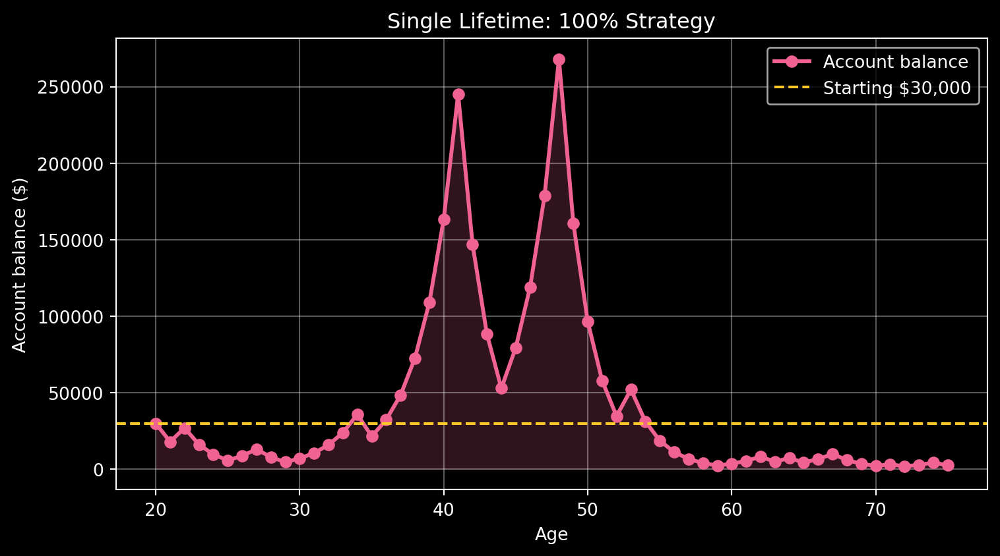
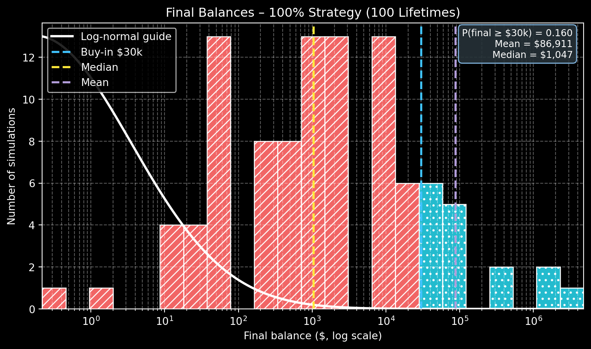
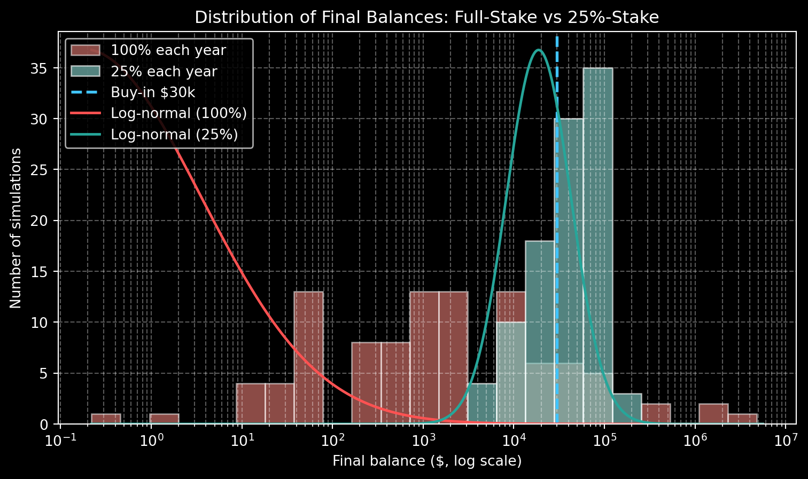

Simulation Challenge: Coin-Flip Retirement Game
1 Overview
This project studies a coin-flip investment game played once per year from age 30 to age 75.
- Starting balance at age 30: $30,000
- Each year: flip a fair coin
- Heads → multiply by 1.5 (50% gain)
- Tails → multiply by 0.6 (40% loss)
- Heads → multiply by 1.5 (50% gain)
I compare two ways to play:
- 100% strategy – the entire balance is at risk every year.
- 25% strategy – only 25% of the balance is exposed each year; the rest sits out that year.
The questions:
- What happens to one account over time?
- What do many simulated lifetimes look like?
- How often do we finish above the starting $30,000?
- How does the 25% strategy change the picture?
1.1 1) Expected value after one flip
Initial balance at age 30: $30,000.
Outcomes after one flip:
- If heads: $45,000 (probability 0.5)
- If tails: $18,000 (probability 0.5)
Expected value after one flip:
[ [W_1] = 0.5 000 + 0.5 000 = 31{,}500. ]
Gain in expected value: $1,500
Gain as a percentage of the buy-in: 5%
So at the one-flip level the game increases expected wealth by 5%. The rest of the analysis asks how that story changes when the game is played every year from age 30 to 75.
TipMath lens
Let (W_0) be the starting wealth. One flip gives
[ W_1 = \[\begin{cases} 1.5 W_0 & \text{with prob. } 0.5, \\[4pt] 0.6 W_0 & \text{with prob. } 0.5. \end{cases}\]]
Then
[ [W_1] = (0.5 + 0.5) W_0 = 1.05 W_0, ]
so the expected gain per flip is 5% of the current wealth.
1.2 2) One simulated path from age 30 to 75 (100% strategy)
Final balance at age 75: $4,431.471.3 3) 100 simulations – distribution for the 100% strategy

1.3.1 Summary tables for the 100% strategy
(<pandas.io.formats.style.Styler at 0x1edae470d40>,
<pandas.io.formats.style.Styler at 0x1edae2992e0>)1.4 4) Probability that the balance exceeds $30,000 at age 75
| Metric | Value |
|---|---|
| Number of simulations | 100 |
| Number of coin flips per simulation | 45 |
| Simulations with final balance ≥ $30,000 | 12 |
| Probability (decimal) | 0.120 |
| Probability (percentage) | 12.0% |
| Probability (final balance < $30,000) | 0.880 (88.0%) |
This table reports the estimate of (P( 000)) directly from the simulations, without repeating the number again in the surrounding text.
1.5 5) Modified strategy – bet 25% of the balance each year

1.5.1 Side-by-side strategy comparison
| Statistic | 100% each year | 25% each year |
|---|---|---|
| P(final ≥ $30,000) | 0.120 (12.0%) | 0.570 (57.0%) |
| Mean final balance | $29,293.15 | $48,642.94 |
| Median final balance | $1,772.59 | $35,485.79 |
| Standard deviation | $118,055.01 | $41,085.65 |
| Minimum | $1.16 | $3,810.26 |
| Maximum | $1,081,901.63 | $264,389.73 |
1.6 6) Kelly-style reflection
TipKelly perspective
The Kelly Criterion describes how much of a bankroll to stake on a favorable bet when the goal is long-run (geometric) growth.
For this game (50% chance of +50%, 50% chance of −40%), the Kelly fraction comes out close to 25% of the account per flip.
The simulations match that idea:
- The 100% strategy sits far above Kelly. It generates a few spectacular wins and many retirements that end below the original $30,000.
- The 25% strategy is closer to Kelly. It raises the chance of finishing ahead, pushes the median above $30,000, and reduces the worst outcomes.
Over the horizon from age 30 to 75, the fractional strategy offers a better balance between growth and protection.